Stellar Wi-Fi Quick Start Guide

1. Get the App
iOS users may search for "Stellar Wi-Fi" in the App Store or scan the first QR code below.
Android users may search for "Stellar Wi-Fi" in the Google Play Store or scan the second QR code below.

2. Local Control
Connect to the bulb
- Install the LED bulb and turn it on.
- Find the bulb’s Wi-Fi network (name SLRGB*******), and connect. Please confirm the connection is successfully established by waiting until the Wi-Fi icon appears in the status bar at the top.
- Open “Stellar Wi-Fi”, pull down to refresh, find your bulb in the type list. (If the bulb can’t be found, please exit the app and clear it from background running apps, then try again.)
- Tap to enter the control interface for the bulb's color and brightness. If you have a RGB bulb, you will see "RGB", "Music" and "Scene" control tabs. If you have a white bulb, you will see "While" control tab. If you are controlling a group of bulbs with both types existing, all tabs will be shown.
- Music Mode
For music mode, switch to the Music tab. On an iPhone, choose a song by tapping the magnifier icon. Only songs in Apple Music (iTunes library) are supported. On an Android phone, tap "Choose Local Music" to load a song from your phone storage to get started.

 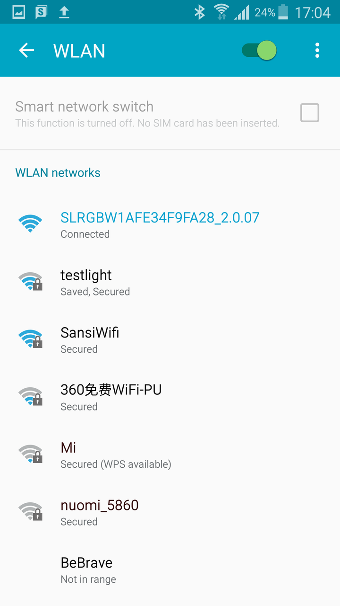
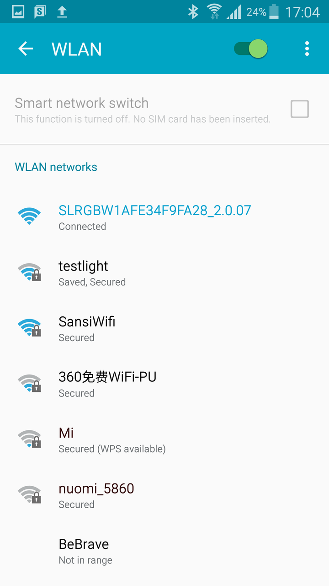
 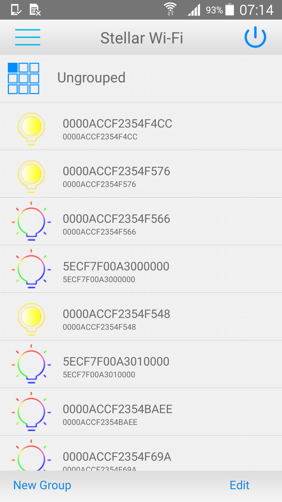
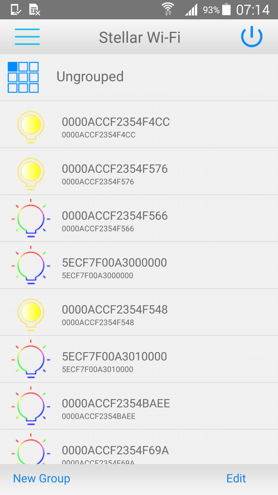
 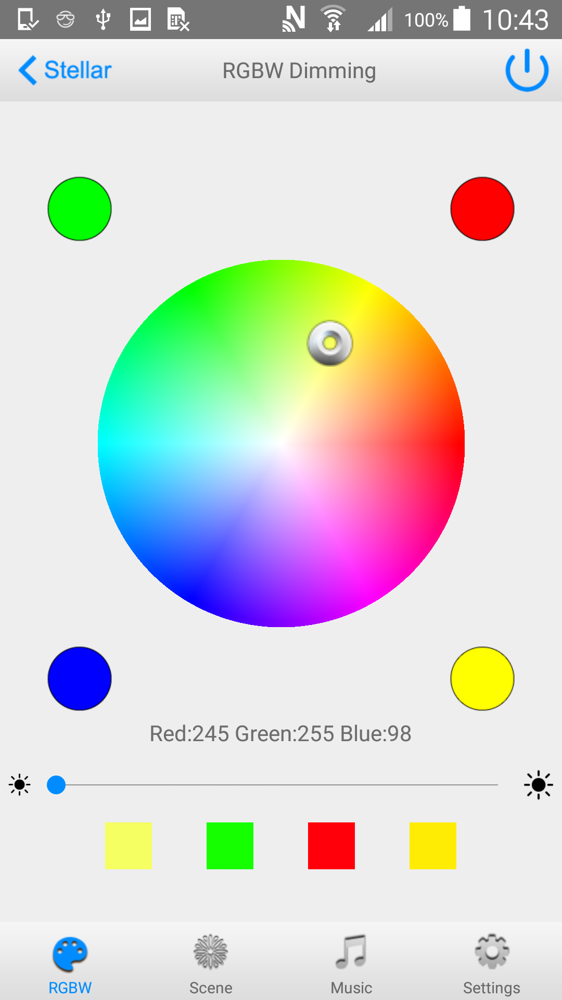
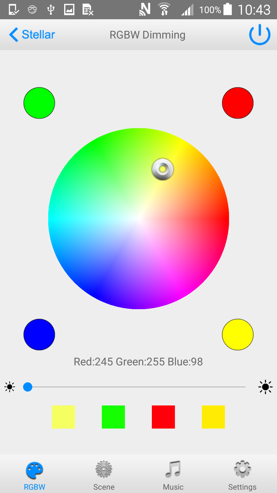
 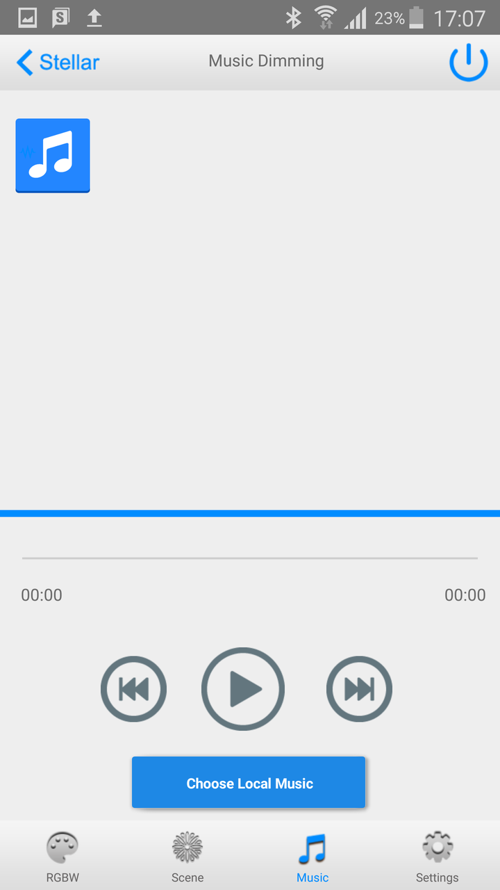
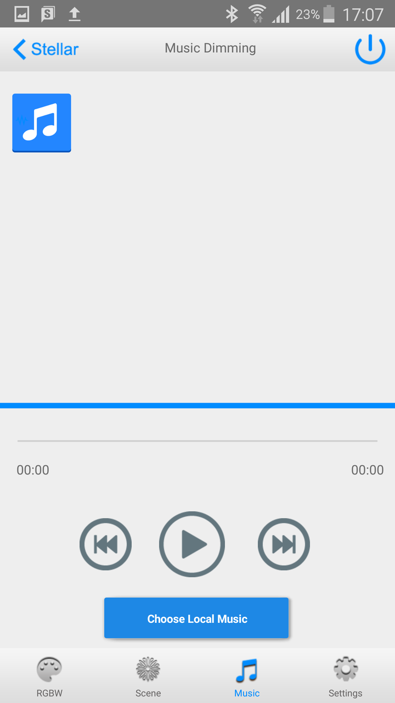
Multiple Bulbs Control
You need to join all your bulbs into the same Wi-Fi network, e.g. your home router.
- Connect the bulb, enter into your bulb’s interface, switch to "Config"" tab.
- This opens the LED bulb configuration page. Rename the bulb if necessary.
- Join your bulb into your Wi-Fi, set Wi-Fi Network including name and password.
- After renaming your bulb (if necessary) and setting your Wi-Fi, the bulb will restart and connect to the new network. You can now continue to add other bulbs.
- Join your phone into the same Wi-Fi network.
- Open the “Stellar Wi-Fi” and it will search all the bulbs in the network.
- To create a new group, click "Add" button, and name the new group.
- Click "Edit", press on right of the bulb name and drag bulbs into one group.
- Click the group name, enter into the group control interface.Then you can control multiple bulbs.


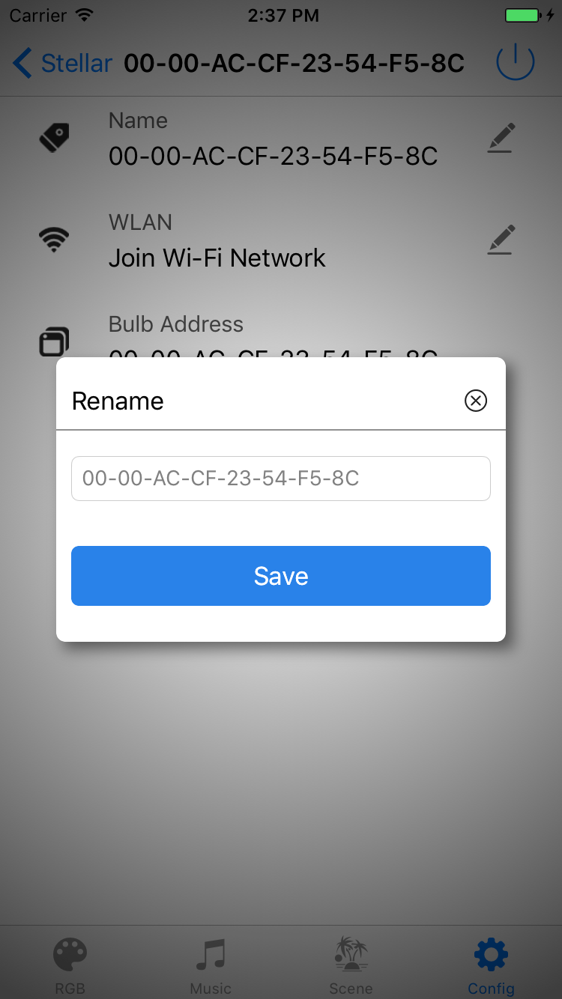
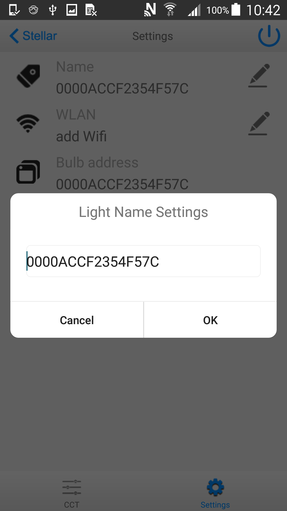
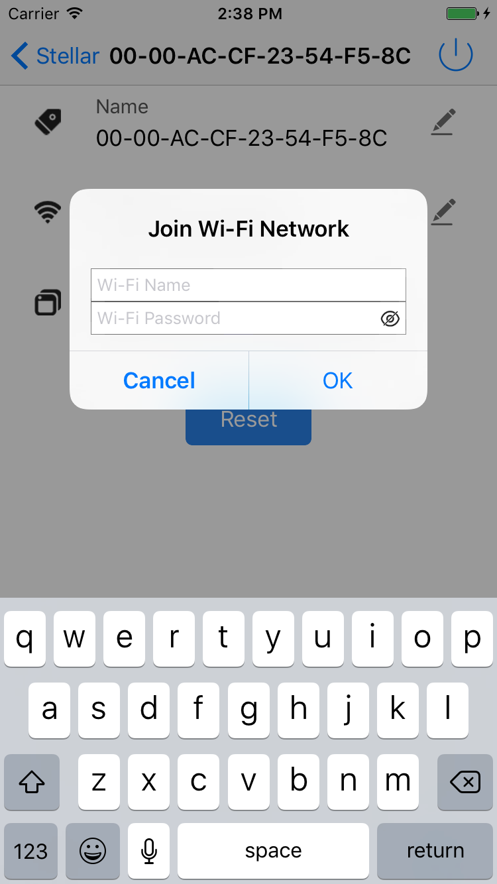
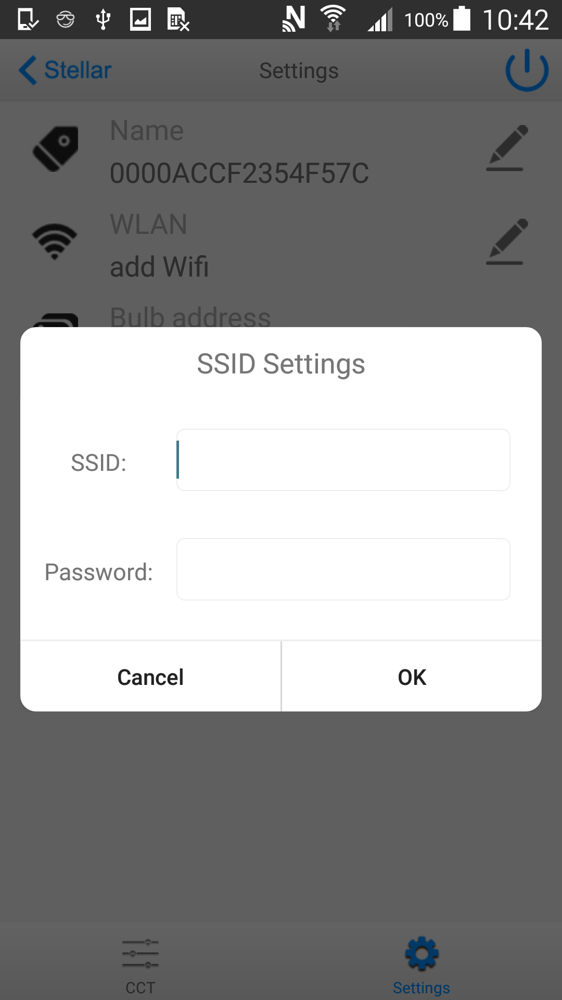
Remote Control
- Click the menu on the left side to switch the control interface.
- Select “Remote Control” and a “Log in” interface will display
- After registration, enter your email address and password to log in.
- For the first time, you need connect the bulb with your account, then next time you can remotely control your bulb with your phone even they are connected to different networks.
- Then click “Remote Control” again, a list of bulbs in the network will display.
- Click the bulb, enter into the control interface, then you can control.
- One bulb can be remotely controlled by only one account, if you want to remotely control the bulb with another account, please delete the bulb on remote control interface from your initial account.
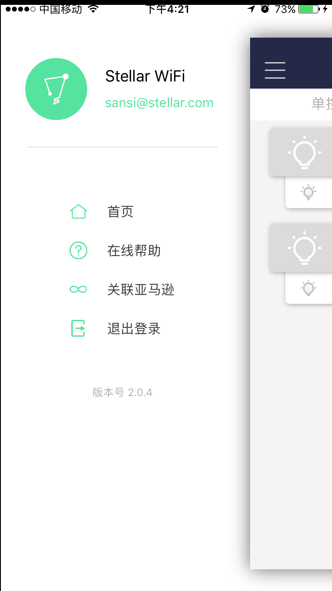
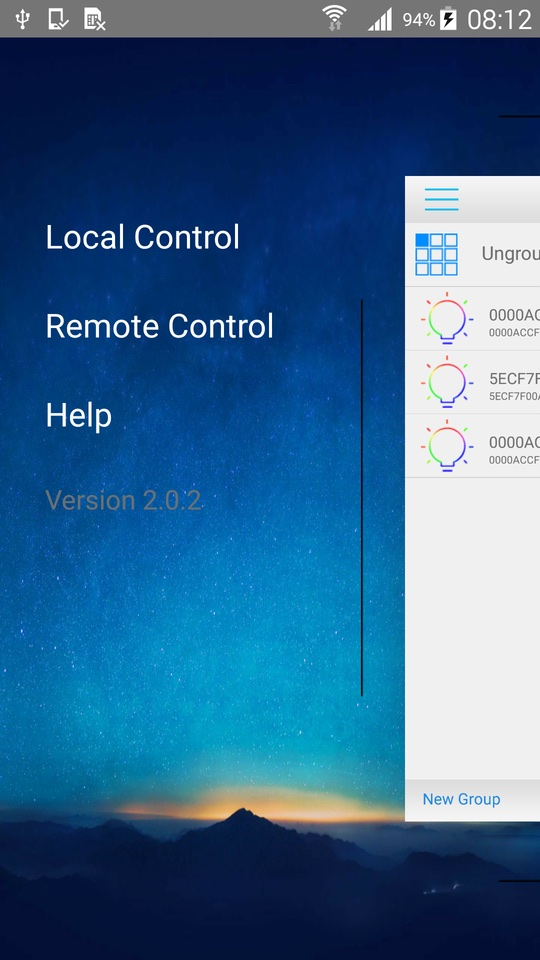
 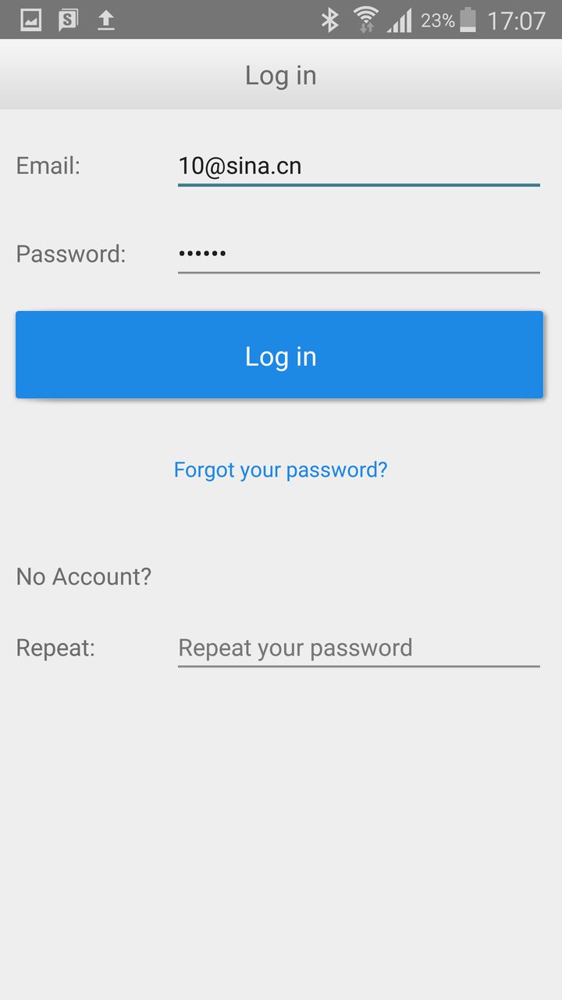
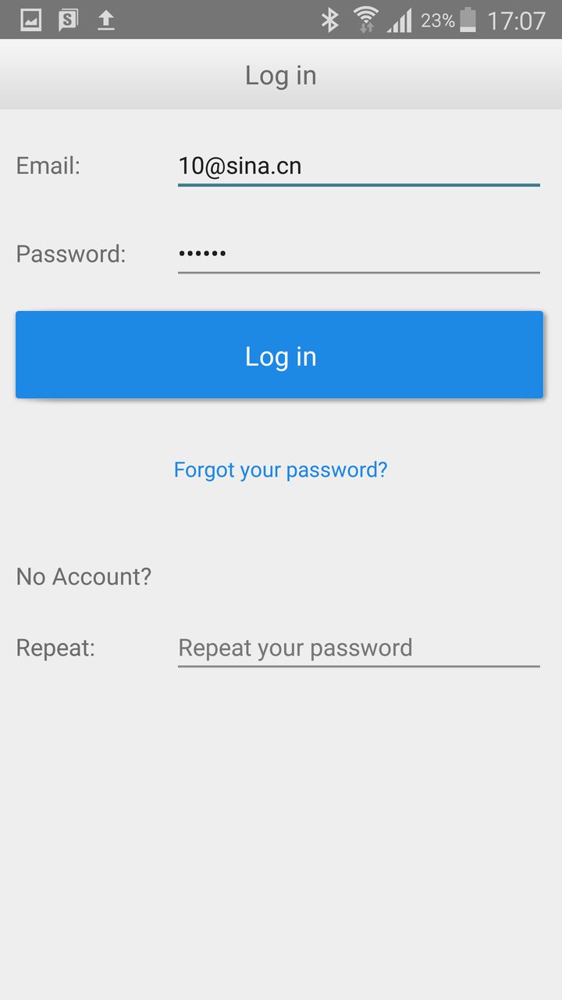
Restore Factory Settings
- Turn off the bulb and wait for 20 seconds
- Repeat the following operation for 3 times.
- Turn on the bulb for 5 seconds.
- Turn off the bulb for 5 seconds.
- Turn on the bulb for the 4th time and wait for 10 seconds. The bulb will now restore the factory settings. It will change colors according to: slow red → slow green → slow blue → warm white and then enter Wi-Fi access point mode.
System Requirements
Stellar Wi-fi runs on the following devices:
- iOS devices running iOS 8.0+
- Android devices running Android 4.2+
You also need at least one Sansi Smart LED bulb to get started.
Contact Us
For technical support, please contact stellar@sansitech.com